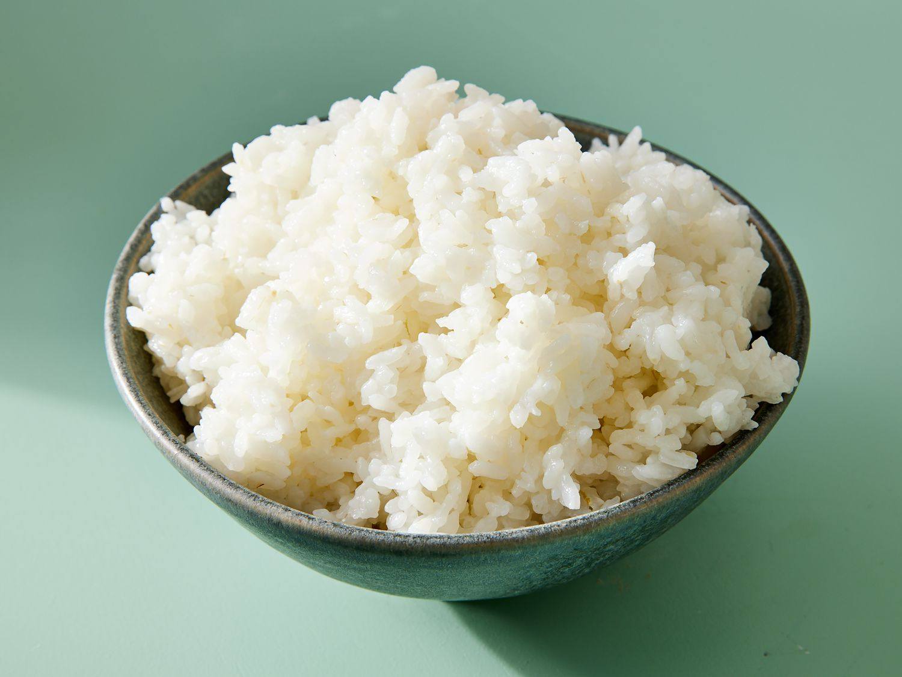

Home
Chicken Teriyaki Recipe

Description
Here's how to make rice if you're like... stupid I guess :3
Ingredients
- Jasmine rice (who's jasmine???)
Steps
- Measure out 1.5 cups of white rice into your rice-cooker's bowl.
- Rinse and agitate your rice with cold water until the water is mostly clear.
- Fill your rice-cooker's bowl to the "2" line.
- Put the bowl into your rice cooker and turn it on, then wait for it to finish